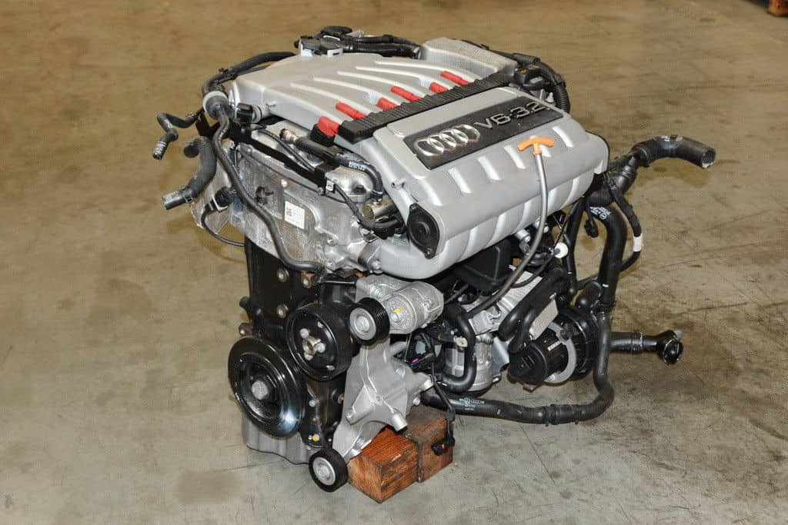
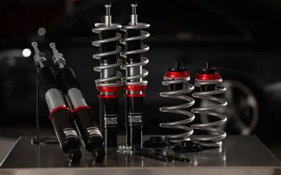

Here wll be showing what types of modification we do and some pictures are customers that we already done their dreams cars come to life

Unleash the beast within with our expert engine services! From routine maintenance to full-blown rebuilds, our skilled technicians will breathe new life into your ride's heart. With cutting-edge diagnostics and precision craftsmanship, we'll get your engine purring like new - or take it to the next level with performance upgrades. Don't let a sluggish engine hold you back - trust our workshop to revive your vehicle's power and performance.
At our workshop, we take pride in offering top-quality exhaust system solutions designed to keep your vehicle running smoothly, efficiently, and quietly. Your exhaust system does more than just direct fumes away — it improves engine performance, reduces harmful emissions, and ensures a quieter, more comfortable drive. Our skilled technicians use precision tools and high-grade components to repair, replace, or upgrade your exhaust, ensuring optimal fuel efficiency and compliance with environmental standards. Whether you need a quick fix or a full system overhaul, we deliver reliable workmanship you can trust.
Get your ride back on track with our expert suspension services! Whether you're looking to upgrade your vehicle's performance or repair worn-out components, our skilled technicians have got you covered. From shocks and struts to springs and sway bars, we'll work tirelessly to ensure your suspension system is running smoothly and safely. Don't let a rough ride hold you back - trust our workshop to get you back on the road with confidence and precision. 🔧

Take your ride to the next level with our custom coil over installations! Our expert technicians will work with you to design and install a coil over system that perfectly suits your driving style and vehicle needs. With precision-tuned damping and adjustable ride height, you'll experience unparalleled handling and control. Whether you're hitting the track or cruising the streets, our coil overs will unlock your vehicle's full potential. Upgrade your suspension game with us and feel the difference for yourself! 🔧